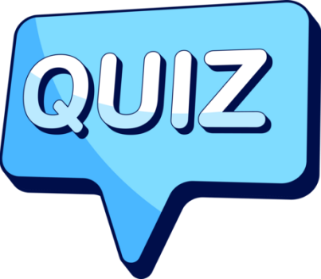
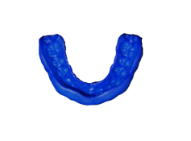
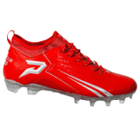
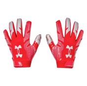
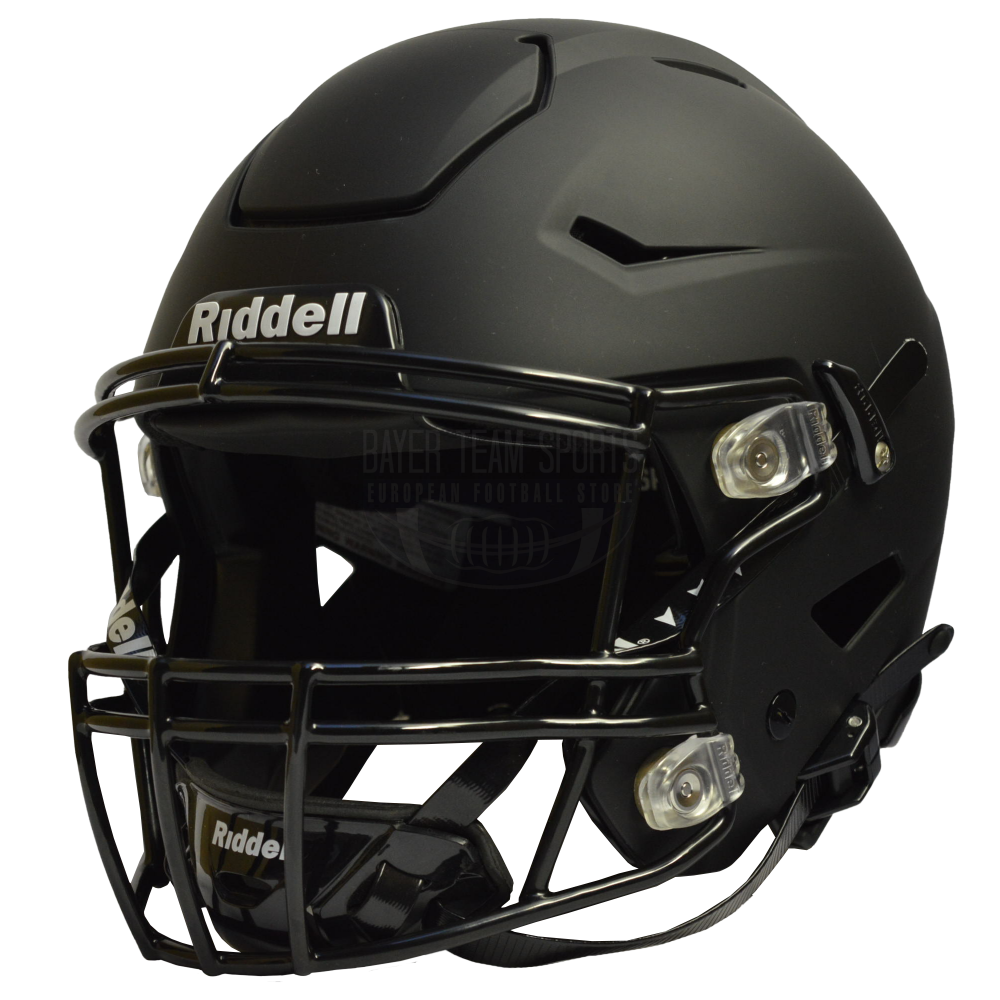
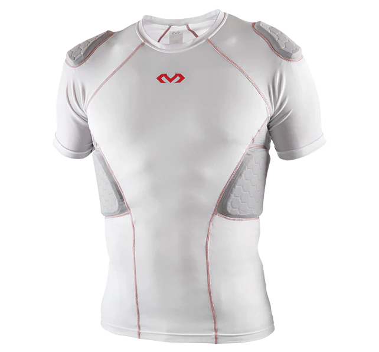
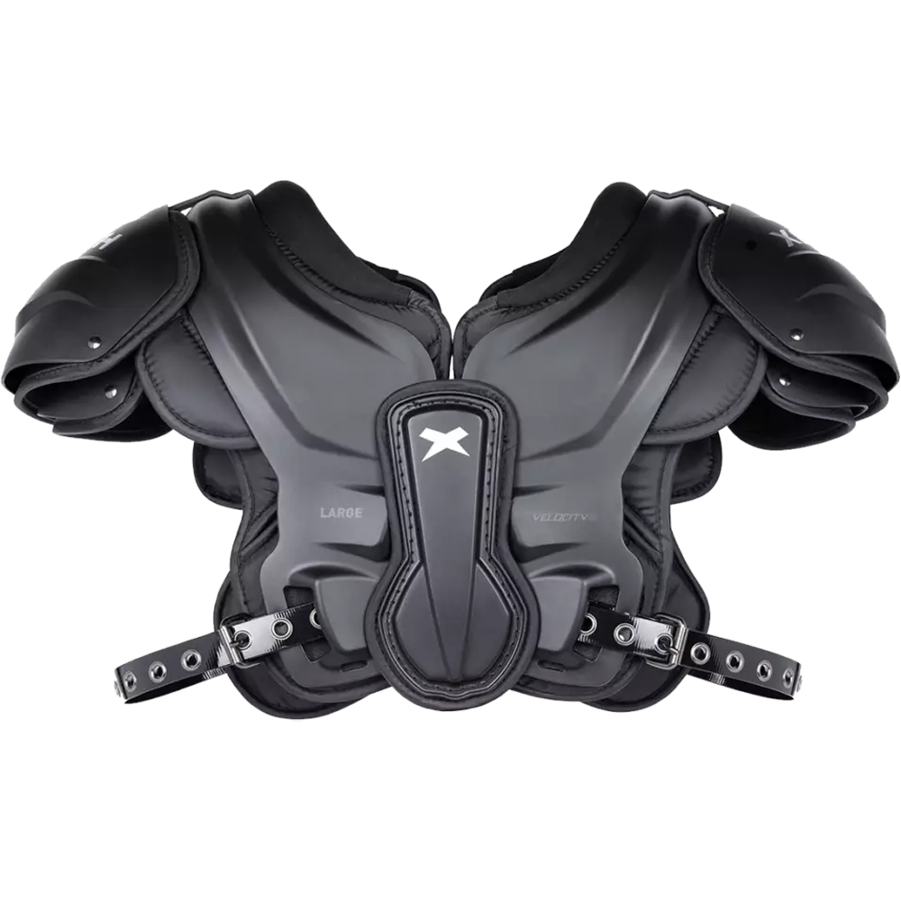
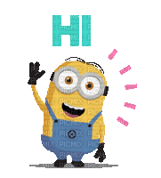

Test jouw kennis van de regels en termen! Krijg direct feedback bij elke vraag en verdien
een speciale badge als je alles goed beantwoordt. Ben jij er klaar voor?

You ready?
Voor deze challenge moet je de juiste items naar de zone slepen waar ze horen.
je hebt een sectie voor Flag Football en een sectie voor American Football.
Weet jij welke items bij welke sport horen?
Flag Football
American Football
Bitje
Football cleats
Jersey
Flags
Gloves
Helmet
Padded shirt
Shoulderpads
Jersey

Uitleg? Klik op mij!
Bitje
Een bitje wordt vooral gebruikt bij American Football maar kan ook bij Flag Football gebruikt worden.
Maar dat kies je zelf, het is niet verplicht om het te gebruiken. het wordt gerbuikt om je tyanden te beschermen. Een bitje is een item die je zelf moet kopen.
Football cleats
Dit zijn cleats speciaal voor Football en worden gebruikt bij American Football en bij Flag Football. Het maakt ud niet uit aan welke kant je deze zet want ze zijn beide goed.
Cleats moet je zelf kopen.
Jersey
Dit is een Flag Jersey en wordt gebruikt bij Flag Football. Dit kan je herkennen door dat het erg op een normale tshirt lijkt.
Deze krijg je ook van de vereniging waar je speelt.
Flags
Deze worden gebruikt bij Flag Football. Ze zitten vast aan een riem op je heup. Wanneer een verdediger een vlag van een aanvaller trekt, wordt de play gestopt.
Deze wordt gegeven door de vereniging waar je speelt.
Gloves
Gloves worden gebruikt om de bal makkelijker te vangen. Ze geven je handen extra grip. Deze worden bij American Football en bij Flag Football gebruikt.
Ze zijn niet verplicht op om te gebruiken, en als je het wilt gebruiken moet je het zelf kopen.
Helmet
Een helm wordt gebruikt bij American Football. Dit wordt gedragen om je hoofd te beschermen tijdens het spelen. Omdat je veel met
je hoofd bots en niemand ernstige verwondingen wilt, wordt er een helm gedragen. In Nederland kan je het krijgen van je vereniging maar meestal moet je het zelf kopen.
Padded shirt
Een padded shirt wordt gebruikt bij American Football. Dit wordt gebruikt voor extra bescherming om pijn te minimaliseren.
Deze zijn Niet verplicht om te gebruiken en als je het wel wilt dan moet je het zelf kopen.
Shoulderpads
Shoulderpads worden gebrukt bij American Football. Deze worden gebruikt om de inpact om je shouders en borst te minimaliseren
tijdens het maken of krijgen van een tackle. De shoulderpad is ook een item die je zelf moet kopen.
Jersey
Dit is een American Football trainings jersey. Je kan aan de schouders herkennen dat het wordt egrbuikt voor American Football.
Het is een kleine detail maar wel te zien. Ook zitten er in de jersey kleine gaten zodat je lichaam genoeg frisse lucht krijg tijdens het trainen.
Dit wordt gegeven door de vereniging waar je speelt

.png)